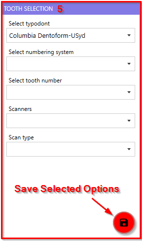
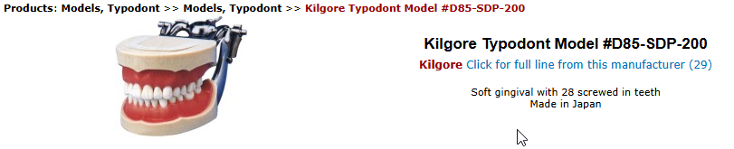
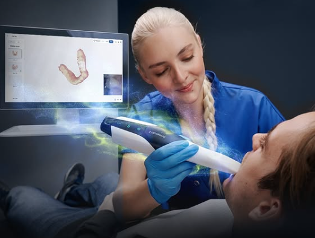
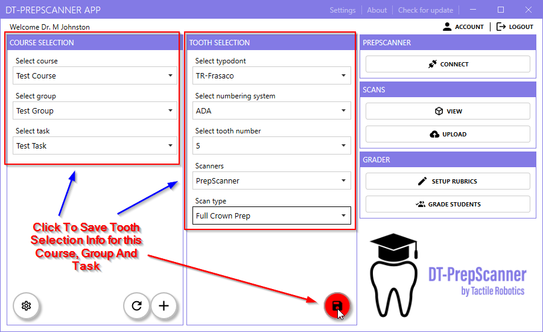

This section provides information on selecting a typodont, numbering system, tooth
number, scanners, and scan type in the PrepScanner App.
Figure 1. Tooth Selection Details 
Overview
The Tooth Selection section of the PrepScanner App allows users to
configure tooth selection parameters before proceeding with dental prep evaluation.
Tooth Selection Process
Select typodent: Choose from available typodont models (e.g., Columbia
Dentoform-USyd).
Note:
Typodont refers to a
dental model used to simulate a patient’s mouth. It helps students
practice dental procedures, such as tooth preparations, in a controlled
environment. Figure 2. Kilgore Typodent 
Select numbering system: Choose either the FDI or ADA numbering format
for tooth identification.
Note:
The FDI and ADA numbering systems
are internationally recognized and widely used in dental practice and
education. They ensure consistency in identifying teeth across dental
professionals worldwide.
Select tooth number: Pick the specific tooth for dental prep
evaluation.
Note:
The tooth number is specific to the
selected numbering system, FDI or ADA.
Scanners: Select the scanning device to be used.
Note:
Select PrepScanner or Intraoral
Scanner
Intraoral Scanners: Select the specific intraoral scanning device model to
be used.
Note:
Dental scanners are advanced imaging
devices used in dentistry to capture detailed 3D digital impressions of
a patient's teeth and oral structures.
Note:
Intraoral Scanners (IOS) – Handheld devices
that dentists use to scan a patient’s mouth directly, creating a precise
3D digital model of teeth and gums. Figure 3. Primescan 2 Intraoral Scanner 
Scan type: Choose the type of scan to be performed.
Note:
For Intraoral scanners there are two types,
STL File and PLY File.
Note:
For restorations (crowns, bridges,
implants): STL is preferred because it is lightweight and
universally compatible.
Note:
For
orthodontics, diagnostics, and soft tissue scanning: PLY is
useful because it retains color and texture information.
Save Selection
After making selections, users must confirm their choices by clicking the "Save
Selected Options" button.
Note:
This will save selected
information for the current course, group and task that is selected in the
Course Selection section. Figure 4. Tooth Selection Save All Info 